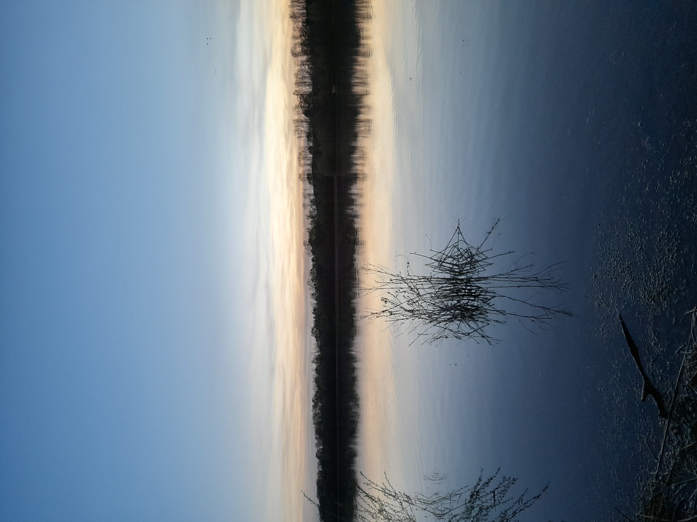
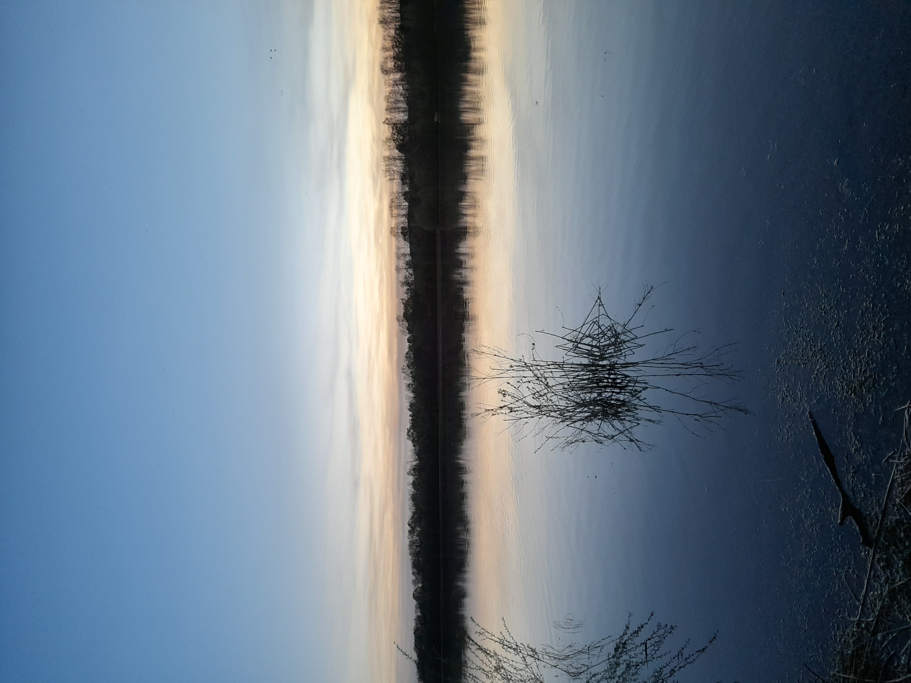

Herzlich Willkommen auf meiner Website!
Ich habe mein Studium als Webdesignerin absolviert. Diese Website habe ich programmiert. Anhand der verlinkten Buttons können Sie sich einen Einblick verschaffen. Dies sind nur ein paar Projekte, die ich erstellt habe. In meinem Studium, sowie privat habe ich diverse Projekte erarbeitet.

Einiger meiner Kenntnisse sind:
Einführung in das WebdesignBildbearbeitung mit Photoshop Elements
Gestaltung von Webseiten mit HTML5 und CSS3
Reponsive Webdesign
Fortgeschrittene Techniken des Webdesigns mit Frameworks
Interaktive Websites mit JavaScript programmieren
Rechtliche Aspekte bei der Produktion von Websites
Online-Marketing und Suchmaschinenmarketing
Projektarbeit und die Konzeption von Webproduktionen
Content Management System: Funktionen mit WordPress
Animationen mit dem Goggle Web Designer